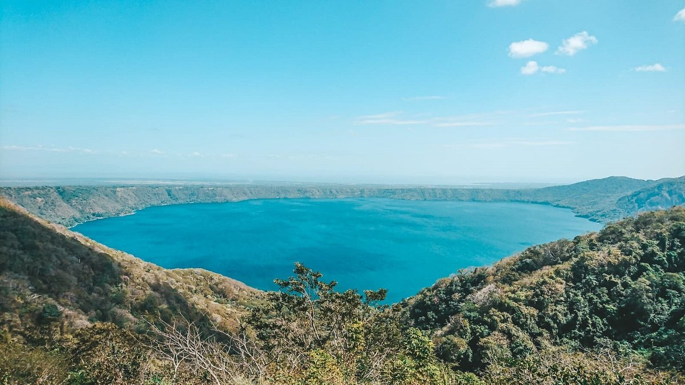
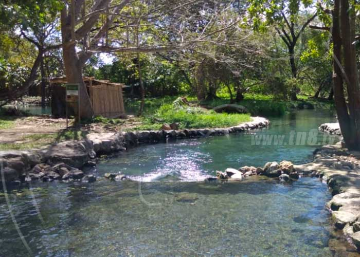

Laguna de apoyo
El agua es un poco salobre, y proviene de la cuenca de su cráter. No cuenta con afluentes importantes. En verano las costas retroceden cerca de diez metros y en la época lluviosa retornan a su nivel máximo. En épocas lluviosas extremas como la provocada por el huracán Mitch el ascenso del nivel llega a ser extremo, pero no significa un peligro para las comunidades cercanas. Mediciones realizadas por el INETER confirman que el nivel de la Laguna ha descendido 6 metros en los últimos 20 años y tiene una profundidad máxima de 176 metros.
Ciudad cercana: Catarina, Diria, Granada, San Juan de Oriente.
Superficie: 19.44km2
La fauna de las laderas se compone de diversos mamíferos como monos aulladores, que son los más representativos y visibles del lugar. También se pueden observar venados, coyotes, zarigüeyas y guardatinajas. Dentro de la laguna habitan guapotes, mojarras, cangrejos, camarones, otros artrópodos acuáticos, y algunas especies autóctonas. Se han introducido tilapias que amenazan la existencia de las especies nativas. Batracios y reptiles aprovechan el agua y conllevan una vida fuera y dentro del agua.

Laguna de Asososca
Se ubica en el occidente del municipio de Managua, con un área de 140 hectáreas, ocupa el fondo de un antiguo cráter volcánico formado por la explosión y hundimiento hace aproximadamente 5,000 años del volcán del mismo nombre. La laguna tiene una forma casi circular de 1.2 kilómetros de diámetro y 95 metros de profundidad a partir del espejo de agua. Es un depósito natural confinado por farallones rocosos que actualmente abastece de agua a una parte de la ciudad de Managua.
En el área se determina por diferentes estudios y observaciones de campo un total de 33 especies identificadas de las cuales el 48% son de flora y 52% pertenecen a la fauna. Cuenta con una vegetación alrededor de la laguna, sobre el borde arenoso crece una sucesión de sardinillo.
La fauna ictiológica de esta laguna, es poca debido a su origen geológico reciente. Hasta hace pocos años existían lagartos en esta laguna, cuya presencia es un misterio, a menos que se considere que fueron echados a la laguna por los aborígenes, quienes consideraban como sagradas sus aguas, a las cuales protegían de cualquier intromisión humana. En el bosque al pie occidental de Asososca se refugia insólitamente una población de zopilotes.
Río escalante Chachocente
Se encuentra en la región del Pacífico Sur entre los departamentos de Carazo y Rivas. Tiene una superficie de 29,604 hectáreas distribuyéndose de la siguiente manera: un 90% en el municipio de Santa Teresa, un 6% en el municipio de Jinotepe y 4% en el municipio de Tola. El área protegida fue declarada a través del Decreto presidencial 12-94, publicado en el diario oficial La Gaceta el 17 de agosto de 1983.
Playa Chacocente es una de las más importantes del mundo que sirve para la anidación de las tortugas marinas, así como la protección del bosque tropical seco del Pacífico que tiene importancia socioeconómica, ecológica y científica para el país.
Las especies de fauna más emblemáticas del área protegida son las tortugas marinas, las cuales anidan en las costas en diferentes momentos del año. Se reporta la anidación de cuatro especies: tortuga tora, tortuga torita, tortuga carey y tortuga paslama; todas ellas en peligro de extinción. También puedes encontrar variedad de aves, mamíferos y reptiles, entre ellos: pelicano café, chocoyo, urraca, cierto guis, guadabaranco, mono congo, ardilla, conejo, garrobo, boa constrictor, venado, etc.
Laguna de chiltepe
Es la única área de conservación de mayor extensión que tiene la ciudad de Managua y que por su cercanía a la misma es una alternativa recreativa. Tiene una extensión de 1,800 hectáreas. Fue declarada área protegida mediante el Decreto 13-20, publicado en el diario oficial La Gaceta No. 213 el 8 de septiembre de 1983.
La redondeada península de Chiltepe se levanta en la costa sur del lago de Managua, a unos 15 kilómetros al noroeste de la ciudad capital. Está conformada por los siguientes atractivos naturales: en el centro se levantan los Cerros Cuapes de Chiltepe a 0518 metros sobre el nivel del mar; estos son los restos de un viejo y erosionado edificio volcánico en cuyo centro se abre la caldera de Apoyeque con 400 metros de profundidad y 2 kilómetros de diámetro, alojándose en el fondo una laguna del mismo nombre; en el sur se abre otra laguna volcánica, Xiloá, ligeramente más extensa que la anterior pero sin aparente conexión con ella.
Existe también una rica ornitofauna acuática en las costas de Chiltepe, especialmente en la pequeña ensenada de Naguayopa, frente a Mateare, que todavía puede observarse con sus piches, patos, garzas y corvejones. La presencia de algunas aves ictéridas asociadas con el agua es notable, figurando entre ellas los sargentillos, bandadas de tordos, clarineros y el zanatillo como especie endémica de las costas de ambos lagos de Nicaragua.
Laguna de chiltepe
Fue declarado como área protegida a través del Decreto 35-93, publicado en La Gaceta No. 122 el 29 de junio de 1993. El área está ubicada dentro de un sistema de micro cuencas cuya parte alta se ubica en la zona de El Crucero y Las Nubes, bajando hacia el este hacia el valle de Ticuantepe. Comprende una extensión aproximada de 279 hectáreas.
En el área protegida se encuentran dos saltos de agua y una estrecha cañada que se abre en posición barlovento, en la parte media de la Sub cuenca III de la Cuenca Sur del Lago de Managua. La precipitación se infiltra muy rápidamente en el trayecto donde no se corre el agua superficial, brotando repentinamente para dar origen a dos cascadas con más de 20 metros de altura, espectáculo que constituye uno de los mayores atractivos del área.
Presenta bosque tropical semi deciduo de bajura riberino, que es una asociación de guayabón, chirimoya, guabillo. En la parte de la ladera, donde se presentan más elementos deciduos que resisten el estrés hídrico en terrenos con alto escurrimiento y suelos pocos profundos, prevalece una asociación de jiñocuabo, chapernillo, quebracho. Entre esta vegetación también aparecen el granadillo o ñámbar y el ébano de maderas preciosas, y en el borde de los acantilados la flora arborescente es enriquecida con el brasilillo.
En el área existen colonias de chocoyos, especie amenazada de extinción, cuyo rango de distribución está en un área de endemismo a nivel mundial, y también constituye una zona de resguardo para muchas especies de mamíferos menores.
Cosigüina
Es un área protegida creada bajo el Decreto 13-20, publicado en el diario oficial La Gaceta el 8 de septiembre de 1983. Ocupa el centro de la península del mismo nombre, incluye los farallones o acantilados y los islotes frente al Golfo de Fonseca en el extremo occidental de Nicaragua. Posee una extensión de 14,123 hectáreas. Caracterizado por su forma de un cono truncado con altura máxima de 872 metros sobre el nivel del mar y una laguna cratérica en su fondo. Posee un clima cálido y una vegetación donde se encuentran bosques latifoliado, tropical seco y humedales.
La fauna del volcán es variada a como corresponde a los bosques secos tropicales, donde todavía existen especies importantes. Entre los mamíferos se encuentran coyote, venado cola blanca, algunos felinos como el jaguar y el puma, sahino de collar, armadillos, oso colmenero, pizote, guardatinaja, mapachín, ardillas, cucalas, los monos congo, araña y carablanca. Entre las aves figuran el guís, pijul, guas, pocoyo, pavón, pava, chachalaca, lapa roja, lora nuca amarilla y paloma ala blanca.
Cosigüina
Se encuentra en el Lago Cocibolca, fue declarado bajo el Decreto 11-94 el 4 de febrero de 1983 y publicado en la Gaceta No. 30 el 5 de febrero de 1983. Su extensión es de aproximadamente 12,490 hectáreas; cuenta con una serie de sitios que, por sus características físicas y la riqueza de recursos de agua, flora y fauna que poseen, constituyen un importante recurso turístico no solo a nivel de área de influencia sino también regional y nacional.
La isla Zapatera es un volcán inactivo y forma parte de la cadena volcánica que atraviesa la franja del Pacífico nicaragüense de norte a sur. Su estructura geográfica es montañosa, está ocupada en la zona central por parte del antiguo cono que actualmente es un amplio cerro con una altura máxima de 629 metros sobre el nivel del mar; alrededor de éste hay otros cerros menores y algunos valles.
En las zonas boscosas es posible encontrar una interesante fauna silvestre con especies como el venado cola blanca, tigrillos, guardatinajas, armadillos; los lugareños hablan incluso de jaguares, además de aves como halcones, oropéndolas, tucanes, loras y chocoyos. En sus costas hay abundantes peces, como mojarras, guapotes e incluso sábalos reales. Alrededor de la isla Zapatera hay más de 10 islas e islotes con tamaños diversos; las más grandes son la Isla del Muerto, Jesús Grandes, El Plátano y El Armado; conformando en conjunto el Archipiélago de Zapatera.
Laguna de Tisma
Fue declarada como sitio RAMSAR mediante el Decreto 13-20, publicado en el diario oficial La Gaceta No. 213 el 8 de septiembre de 1983. El área comprende el embalse del curso medio del río Tipitapa, conocido popularmente como charco de Tisma, más los humedales aledaños comprendidos entre éste y la costa noroeste del Lago Cocibolca, también abarca las lagunetas y pantanos de El Genízaro; conformando una extensión de 10,295 hectáreas.
Esta área protegida es una especie de oasis para la fauna acuática, se pueden mencionar el guapote y gaspar con valor económico; así mismo se reportan patos zambullidores, garcetas, avocetas, garzas, sargentillos, zanates y aves migratorias.
En las áreas remanentes de los bosques ligados a los humedales de Tisma encontramos: mangle de río, almendro de río, roble macuelizo, chilamate, helequeme, jabillo, cedro real, tigüilote, ceiba, cedro macho, guácimo de ternera, cornizuelo, melero, jaboncillo. En la costa de la laguna son más frecuentes el espino de playa, genízaro, manzana de playa, pochote, linga, nancigüiste, comida de culebra, aromo, zarza de humedal, tamarindo cimarrón, zacate gallina, neptunia plena, coyolito.
Volcán Maderas
Fue declarado reserva natural mediante el Decreto 13-20, publicado en el diario oficial La Gaceta No. 213 del 9 de septiembre de 1993. Tiene una extensión de 4,100 hectáreas y una elevación de 1,394 metros y un diámetro máximo en su base de 24 kilómetros. Su última erupción tuvo lugar hace más de ocho siglos y hoy en día se le considera extinto; ya que su cráter se encuentra ahora ocupado por una pequeña laguna, lo cual aleja la posibilidad de una reactivación ígnea en su interior.
El Maderas es un volcán compuesto, muy antiguo y en estado de avanzada erosión y derrumbe. Sobre sus boscosas laderas sobresalen grandes bloques de basalto. El edificio volcánico está cortado en su centro por una falla orientada de noroeste a sureste, claramente delineada entre el río Balgüe y la ensenada de San Pedro. El bloque oriental se ha desplazado ligeramente hacia el sureste resaltando la presencia de dos crestas en el perfil del volcán, una hacia el norte de 1,127 metros y la otra de 1,395 metros junto a la lagunita.
En la parte baja del volcán Maderas, entre los 80 a 450 msnm, encontramos especies de cedro, coyol, madroño, ojoche, ceibo, genízaro, guapinol, guabillo, yema de huevo, madero negro, pellejo de vieja, guacimillo, guayabón, níspero de montaña, aguacate montero, guaba.
Volcán Telica
Está ubicada en el municipio Telica del departamento de León a 30 kilómetros de este. Fue declarada como área protegida mediante el Decreto 13-20 publicado en el diario oficial La Gaceta No. 213, el 2 de mayo de 1980.
Posee una extensión de 9,808 hectáreas. Conformada por un conjunto volcánico en el que se destacan el volcán Telica, uno de los 6 volcanes más activos de Nicaragua con frecuentes erupciones; el volcán Rota, que forma un macizo volcánico cuyo centro se ubica como 8 kilómetros al suroeste del Malpaisillo; el Cerro Amapola, Cerro El Cacao, Volcán Santa Clara y los Hervideros de San Jacinto.
Presenta vegetación de bosque tropical seco en donde predominan especies como el quebracho, jiñocuabo, laurel, guásimo de molenillo, guásimo de ternera, poro poro, tigüilote, palanco, burillo, lechoso, tololo, chaperno, ojoche, tempisque y pochote. Esta cobertura boscosa, alberga una fauna variada, predominando especies de mamíferos como el cusuco, guatusa, venado, sahino y conejo; así como el garrobo.
Volcán pilas EL Hoyo
La reserva natural Complejo volcánico Cerro Negro-Pilas-El Hoyo se encuentra a 30 kilómetros aproximadamente al este de la ciudad de León y a 11-16 Km. al norte de La Paz Centro. Fue declarada área protegida a través del Decreto 13-20, publicado en el diario oficial La Gaceta No. 213 el 8 de septiembre de 1983.
Su extensión es de 11,569 hectáreas y está formado por varios edificios volcánicos que comparten la misma base; siendo el más destacado el volcán Pilas, con su cráter activo El Hoyo de 1089 metros; hacia el oeste del mismo se levanta el Cerro Negro con 726 metros, el volcán más joven y activo del país; hacia el sur se alza el cono truncado y apagado de Asososca o Ajusco con 818 metros sobre el nivel del mar, en cuya base se abre la laguna cratérica de Asososca, también llamada Laguna del Tigre.
En el área se identifican zonas climáticas como el bopsque tropical seco, tropical transición a húmedo y bosque pre-montano transición a húmedo; predominando especies como el tempisque, panamá, ceiba, ojoche, madroño, sardinillo, cachito y jiñocuabo; que dan albergue a distintas especies animales como chocoyos, urracas, conejos y garrobos.
San cristóbal - Casita
Localizada entre los municipios de Chinandega, Chichigalpa y Posoltega del departamento de Chinandega, en la parte norte de la región del Pacifico de Nicaragua; conformada por cinco conos volcánicos; entre ellos el volcán San Cristóbal, el más alto del país. Forma parte de la cordillera de Los Maribios y tiene una extensión territorial de 17,629 hectáreas.
Fue declarada por el Decreto 13-20, publicado en el diario oficial La Gaceta No. 213 el 8 de septiembre de 1983; con el objetivo de proteger y prevenir mayores deterioros ecológicos en aquellas áreas naturales significativas de nuestra geografía, ya que representa una recarga del acuífero y abastece de agua potable a la población de occidente de Chinandega.
Se presentan tres tipos de ecosistemas naturales: bosque tropical seco o bosque deciduo, bosque de pino y sabanas sin cobertura leñosa (pastos naturales). Se reportan 64 especies de árboles según un muestreo efectuado durante una investigación realizada por la UCA y 61 especies arbóreas agrupadas en 34 familias en la finca Argelia, una de las propiedades privadas más grandes del área protegida y con un bosque bastante conservado. En cuanto a la fauna, se reportan 23 de mamíferos, 10 especies de reptiles, 79 especies de mariposas en el volcán Casita; así como 41 especies de aves entre las que se destacan 3 especies por su aislamiento en los volcanes, esta son: el sabanero dorsilistado, charralero de las rocas y el charralero cejiblanco.
Archipiélago solentiname
Se encuentra ubicado en el Archipiélago de Solentiname en el Lago de Nicaragua. Declarado monumento nacional a través del Decreto 527, publicado en el diario oficial La Gaceta No. 78 el 17 de noviembre de 1991; por ser un área especial de manejo y restauración ambiental debido a su importancia natural, histórica y cultural.
Tiene una extensión de 17,950 hectáreas. Comprende 4 islas relativamente grandes, las cuales son Macarrón, Macarroncito, San Fernando y La Venada, que están rodeadas de numerosas isletas muy rocosas; así mismo dentro de sus límites 1 kilómetro aproximadamente de aguas adyacentes del archipiélago.
Además se conocen 16 especies de peces, históricamente ha sobresalido el tiburón de agua dulce, otra especie sobresaliente en las aguas del archipiélago es el pez sierra que igual en el caso del tiburón es una especie marina, ampliamente distribuida desde La Florida hasta Brasil; también habitan especies de peces que migran desde las aguas saladas o salobres del delta del río San Juan de Nicaragua hasta las aguas dulces del lago, entre estas destacan el sábalo real, el róbalo y el gaspar; así mismo, se encuentran otras especies no migratorias con gran valor comercial como mojarras, tilapia, guapotes, roncador.
Laguna de Tiscapa
Se ubica en la parte sureste de la ciudad de Managua, capital de Nicaragua a 2 kilómetros de la costa del Lago Xolotlán. Fue declarada reserva natural mediante el Decreto 42-91, publicado en el diario oficial La Gaceta No. 213 el 4 de noviembre de 1991.
El área protegida tiene una forma más o menos circular, comprende la Loma de Tiscapa y la Laguna de Tiscapa. Tiene una extensión de 40 hectáreas.
En el sector norte a la altura del parque de la estatua de Sandino el suelo es rocoso, con vegetación escasa, generalmente de gramíneas, también árboles poco desarrollados de las especies sardinillo, espino de playa, guácimo y otras con sotobosque ralo.
En el sector sur de la laguna tiene una cobertura vegetal actual formada por árboles y arbustos de variadas especies, entre las que se identificaron las siguientes: aceituno, capulín, ceiba, chaperno, cimarra, guanacaste blanco, guanacaste negro, guayacán, güiligüiste, higuerilla, huevo de burro, jícaro sabanero, jiñocuabo, jocomico, laurel negro, melero, papaturro, poro poro, tigüilote, jenízaro.
Miraflor
Miraflor es una reserva natural única, ubicada a 30 kilómetros de la ciudad de Estelí aproximadamente. El parque mide 254 km² y en él se aprecian tres tipos de climas distintos: seco en la zona baja, intermedio y húmedo, así como un bosque nebliselva predominante. Además de las zonas de naturaleza intacta, Miraflor está también habitada por finqueros que cultivan granos y crían ganado.
El parque alberga nueve comunidades, las cuales viven de la agricultura. La fundación UCA (que no tiene nada que ver con Universidad Centro Americana, que también se abrevia UCA) trabaja para mejorar la finca ecológica en el área y tiene otros programas que ayudan a las comunidades a producir productos ecológicos siendo el café uno de los más importantes.
Además de las inciativas comunitarias, dentro de Miraflor también existen iniciativas privadas con distintas opciones de alojamiento ubicadas en la zona de nebliselva. Se pueden encontrar hoteles, fincas y hospedajes con mayores comodidades para el visitante.
Laguna de Nejapa
Se encuentra ubicada al suroeste de la ciudad de Managua. La laguna de Nejapa ocupa una depresión ovalada de 160 metros de hondo, formada por tres pequeños colapsos al pie del cerro Motastepe. Es muy superficial y está cargada de sedimentos y sales minerales. Su poca profundidad augura un próximo desecamiento. Tiene una extensión de 220 hectáreas.
Las laderas internas de la laguna de Nejapa están formadas por capas superpuestas de antiguos piroclastos que son fácilmente atacables por la erosión, al menos que se protejan dichas laderas con alguna cobertura vegetal. En ciertos lugares, como en el cerro de Motastepe, que es un verdadero pilón de arena, la quema anual de la vegetación expone los suelos a una rápida erosión, sin descartar posibles revenimientos, debido a que su base norte está siendo fuertemente excavada por canteras de arena.
La precipitación pluvial anual promedia entre los 1,000 y 1,200 milímetros cúbicos y se presenta durante la estación lluviosa. La deforestación progresiva en la cuenca sur del lago de Managua ha disminuido la infiltración y provocado el descenso del manto freático en la llanura subyacente, con la consecuente baja del nivel de la laguna. La temperatura media anual alrededor de esta laguna es de unos 27° centígrados. En el fondo es un poco más elevada debido a la protección del viento.
Los Guatuzos
Se encuentra ubicado al sur del Lago Cocibolca, en el municipio de San Carlos del departamento de Rio San Juan. Tiene una superficie de 43,750 hectáreas. Fue declarado como área protegida a través del Decreto 527, publicado en el diario oficial La Gaceta No. 78 el 17 de abril de 1990. Pertenece a la lista de humedales de importancia internacional del Convenio de Ramsar, ya que transcurren un total de doce ríos, siendo el más importante el río Papaturro.
Es un territorio ocupado mayormente por el bosque húmedo tropical con especies predominantes como el poponjoche, helequeme, roble, anona de pantano, genízaro, yolillo, jobos, caoba, cedro, camíbar, gavilán, guácimo y cedro macho; también existen un total de 315 especies de plantas, destacando entre las mismas 130 especies diferentes de orquídeas.
En lo que respecta a la fauna; se encontró una riqueza de 326 especies de aves, destacándose entre ellas las garzas y cigüeñones, pato chancho, pato aguja, gallinetas, pájaro campana, guacamaya roja, pancho galán; en cuanto a los reptiles están representados por el cuajipal, lagarto, tortuga ñoca, pecho quebrado y tortuga lagarto; así mismo, es posible encontrar especies como iguana, garrobo, basilisco, lagartija y ofidios; por otra parte la presencia de mamíferos se representa por especies como guardatinaja, venado cola blanca, cusuco, saino, pizote, perezoso, mono congo, mono araña, danto, chancho de monte, oso caballo, jaguar y puma.
Vólcan Masaya
Fue declarado como área protegida mediante el Decreto 79, publicado en el diario oficial La Gaceta No. 114 el 24 de mayo de 1979 y desde entonces se ha convertido en una de las principales atracciones turísticas del país.
Se identifican claramente dos ecosistemas, el bosque tropical seco y el ecosistema acuático laguna de Masaya. De estos se deriva una cantidad de hábitats que están determinados por las características geológicas de origen volcánico, que hacen una vegetación compleja representada por jiñocuabo, sardinillo, poro poro, pochote, chilamates y el árbol de nuestra flor nacional sacuanjoche. En lo que respecta a los usos potenciales de las plantas, se han identificado 48 medicinales, 54 ornamentales, 58 maderables, 64 alimenticias, 12 para artesanías, 8 para fibras y 4 para colorantes.
Vólcan Mombacho
Se encuentra localizado aproximadamente a 10 kilómetros al sur de Granada, cerca de la costa oeste del Lago Cocibolca. El área protegida comprende solamente la cumbre del volcán Mombacho a partir de la curva de nivel de los 850 metros sobre el nivel del mar. Su figura es la de un alto cono de cumbre truncada y aserrada, de actividad aparentemente extinta, cuyo pico más elevado alcanza 1,344 metros sobre el nivel del mar.
El cráter principal, formado en tiempos inmemoriales por una gigantesca explosión, mide 1,800 metros de diámetro y 650 metros de profundidad. Se encuentra abierto y desplomado hacia el sur debido a un colapso y avalancha sucedida en el año 1570. Dos pequeños cráteres secundarios se abren en la meseta llamada Plan de Las Flores. Estos cráteres están cubiertos de vegetación y están extintos desde hace mucho tiempo.
Fue declarada reserva natural por ser reconocida como uno de los últimos refugios de selva tropical, mediante el Decreto 13-20 publicado en el diario oficial La Gaceta No. 213 el 8 de septiembre de 1993. Recibió su nombre de la lengua náhuatl y significa “Cerro de Agua”, debido a las vertientes de ríos, lagunetas y ojos de agua que tiene en sus faldas.

Padre Ramos
Está situada sobre la costa del Pacífico de Nicaragua, al norte del Puerto Corinto en la Península de Cosigüina. Declarado como área protegida, a través del Decreto 13-20 publicado en el diario oficial La Gaceta No. 213 el 19 de septiembre de 1983. Tiene una extensión de 9,157 hectáreas. Presenta ecosistema de manglar que se caracteriza por su alta diversidad de especies, basado en una gran riqueza y variedad de fuentes alimenticias e ingresos para las comunidades aledañas.
Estero Real
Declarada como área protegida bajo el Decreto 13-20 publicado en el diario oficial La Gaceta No. 213 el 8 de septiembre de 1983. Tiene una extensión de 86,149 hectáreas. El Estero Real junto con su vecino el Río Negro son los únicos ríos que drenan en el Golfo de Fonseca, formando antes de desembocar un extenso, combinado e intrincado delta pantanoso. El curso de los dos ríos principales forma varios meandros y se ramifica en esteros secundarios y terciarios, llamados localmente «caletas» que se comunican entre sí.
Las principales especies del manglar son el mangle rojo, mangle negro, palo de sal, que crecen juntos y en algunas partes en rodales separados. De toda la región del Pacífico, los manglares del Estero Real son los más desarrollados en diámetros y alturas. En los salitrales se desarrolla una vegetación de mangles achaparrados compuesto en su mayoría por palo de sal y botoncillo.
El manglar acoge algunos mamíferos visitantes, especialmente mapachines y pizotes. En los playones se registran huellas de conejos, venados, cusucos y ocelotes, así como de tortugas paslama. Entre las ramas del manglar se esconden iguanas verdes, también se han localizado lagartos. Por otra parte, las aves acuáticas son numerosas a lo largo de los esteros, especialmente garzas, avocetas y tigüises. También se ve al raro cigüeñón, pelícanos y garzas. En la época de migración que coincide con el final del invierno, los humedales se ven visitados por numerosas aves acuáticas, zancudas y palmípedas, especialmente en los llanos inundados.
LLanos de Apacunca
Se localiza entre los municipios de Somotillo y Villanueva, Chinandega, al norte de la región del Pacífico de Nicaragua, a unos 170 kilómetros de la capital Managua, tiene una extensión de 1,576 hectáreas.
Creada en 1996 mediante la Ley 217-Ley General del Medio Ambiente y los Recursos Naturales, publicada en La Gaceta No. 105 el 6 de junio del año 1996, con el fin de conservar las últimas poblaciones del maíz primitivo especie endémica de importancia mundial y única especie de teocinte que crece al nivel del mar, considerada como una especie silvestre única en América.
El área protegida cuenta con bosques tropicales latifoliados aluviales que se encuentran en un estado relativamente bien conservados a lo largo del río Villanueva. Las sabanas de arbustos deciduos constituyen otro importante ecosistema
Indio Maíz
Se encuentra localizada en el extremo sureste de Nicaragua entre los municipios de El Castillo, Río San Juan y Bluefields en Costa Caribe Sur; declarada a través del Decreto 527, publicado en el diario oficial La Gaceta No. 78 el 17 de abril de 1991.
Tiene una superficie de 316,720 hectáreas, conformada por lagunas, ríos y estuarios, humedales, planicies costeras y formaciones montañosas que aseguran un excelente espectáculo de la naturaleza. Presenta vegetación característica del bosque húmedo tropical, destacándose especies como el laurel, caoba, cedro real, santa maría, palma de escoba; así como el bosque de mangle representado por especies como el palo de agua o barba de leche.
Isla Juan Venado
La Isla Juan Venado está situada sobre la costa del Pacífico entre las comunidades de Las Peñitas y Salinas Grandes en el municipio de León. Tiene una superficie de 13,217.5 hectáreas. Fue declarada mediante el Decreto 13-20, publicado en el diario oficial La Gaceta No. 213 el 8 de septiembre de 1983.
La vegetación sobresaliente es su impresionante santuario de manglares. Estos árboles tienen un sistema de filtración de la sal y sólo se pueden encontrar en lugares que tienen climas tropicales o subtropicales. Propician un escondite perfecto de cocodrilos, caimanes e iguanas; así mismo, la reserva es el hogar de 106 especies de aves, crustáceos y varias especies de tortugas marinas.
Laguna Mecatepe
Se ubica en la comarca Mecatepio del municipio San Juan del Mombacho en el departamento de Granada. Fue declarada como reserva natural mediante el Decreto 13-20, publicado en el diario oficial La Gaceta No. 213 el 8 de septiembre de 1983.
Tiene una extensión de 2,464 hectáreas. Ocupa pequeñas depresiones producto de algunos desplomes relacionados con la actividad del volcán Mombacho; entre ellas figuran Juan Tallo, Jiron, El Cacho, Laguna Verde, Laguna Blanca, Santa Isabel y Las Plazuelas; todas estas desaguan en el Río Manares en el Lago Cocibolca.
Río Manares
Presenta un bosque denso, destacándose remanentes del bosque tropical seco, humedales, bosque riberino y bosque de nebliselva. En esta reserva se encuentran árboles de gran tamaño como panamá, genízaro, melero, guanacaste, espavel, pochote, caoba, cedro, ceiba y que sirven de alimento y de sitio de anidación de psitácidos y otras aves que son especies amenazadas en el pacífico de Nicaragua.
En total se reportan 215 especies de vertebrados, 188 insectos, para un total de 403 especies de fauna. Predominan especies como venado cola blanca, chocoyo jalacatero, el pavón, chachalaca, garrobo negro e iguana verde.